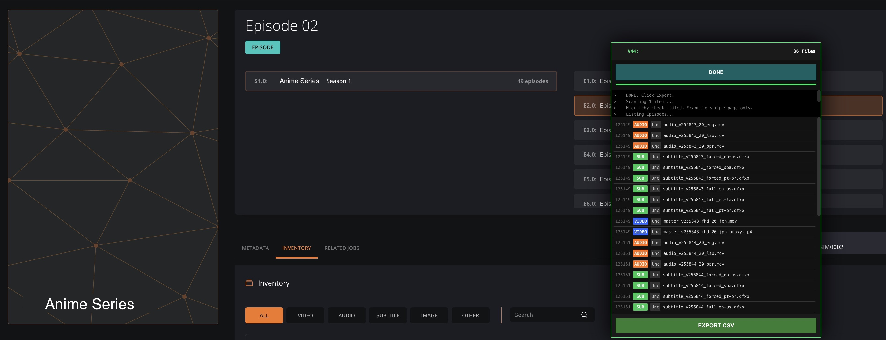

Production-facing internal toolSeason-Level Media Inventory Operations Console
Extended an authenticated media CMS with season-level inventory loading, search, filtering, classification, CSV export, download queues and confirmed delete/replace workflows.
Reduced locate, verify and delete/replace work from about 4-7 minutes per asset to under one minute in large season inventories.